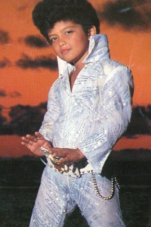

FULL NAME: Peter Gene Hernandez
BORN: October 8, 1985
BIRTHPLACE: Honolulu, Hawaii
ASTROLOGICAL SIGN: Libra
Born and raised in Honolulu, Bruno Mars began performing at age 4 as a tiny Elvis impersonator in his family's band, alongside siblings Jaime, Tiara, Tahiti, Presley, and Eric. His childhood was filled with music; he sang, danced, and later added Michael Jackson impressions to his act. At Roosevelt High School, he formed The School Boys, performing oldies at Honolulu hotels. Mars credits this early start for his fearless stage presence, saying performing “was normal” in his musical family.
In 2010, everything changed. Mars co-wrote CeeLo Green’s “Forget You” and Travis McCoy’s “Billionaire,” earning Grammy nods. His feature on B.o.B.’s “Nothin’ on You” became his first #1 hit. That same year, his debut album Doo-Wops & Hooligans dropped, led by “Just the Way You Are” — a global smash that won him his first Grammy. His blend of soul, pop, and showmanship made him one of the most dynamic artists of the 2010s.
24K MAGIC
DOO-WOPS & HOOLIGANS
DIE WITH A SMILE
UNORTHODOX JUKEBOX
AN EVENING WITH SILK SONIC